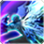
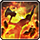
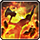
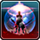
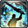

직업 설명파티원을 보호하는데 특화된 직업. 검술과 마법을 함께 사용한다.
난이도
전직 정보
특화 스킬 감싸기 천하 무적 결연한 수호자
공격을 대신 받습니다. 일부 공격은 해당되지 않으며,
대상과 10m 이상 떨어지면 효과가 발휘되지 않습니다.
10초 동안 일부를 제외한 모든 피해를 무효화합니다.
18초 동안 자신의 방패 막기 발동률이 100%가 되고,
후방 부채꼴 범위 안에 있는 파티원이 받는 피해를
15% 감소시킵니다.
효과 지속 중에 움직이면 즉시 해제됩니다.
실행 후 자동 공격이 정지됩니다.
직업 설명원초의 힘과 도끼를 사용하는 직업. 조작이 쉽고 회복 기술이 많아 유지력이 좋다.
난이도
전직 정보
특화 스킬
일대일 결투
 참수
원초의 혈기
참수
원초의 혈기
자신의 HP가 1 미만으로 떨어지지 않습니다.
적을 대상으로 실행한 경우에는
대상을 이동 불가 상태로 만듭니다.
원초 50을 소비하여 대상에게 물리 공격을 가합니다.
위력: 460
원초의 혼돈 효과 중에는 내면의 혼돈으로 변화합니다.
8초 동안 자신이 받는 피해량이 10% 감소하고, 자신의 무기 기술
공격이 명중하면 HP를 회복합니다. 회복력: 400
추가 효과: 자신에게 원초의 혈조 및 원초의 혈류 부여
원초의 혈조: 4초 동안 자신이 받는 피해량이 10% 감소합니다.
원초의 혈류: 자신에게 20초 동안 회복력 400만큼 피해를 막아주는
보호막을 칩니다. 재사용 대기 시간을 원초의 분노와 공유합니다.
직업 설명내면의 어둠과 대검, 마법을 다루는 직업. 마법 피해에 강하며, MP를 소모해 순간적인 피해를 입힌다
난이도
전직 정보
특화 스킬 산송장 흑야 환영 구현
될 만한 피해를 받으면 HP가 1 남고, 10초 동안 움직이는 시체 상태로 변화합니다.
움직이는 시체 지속시간 안에 최대 HP의 100%만큼 회복하면 시체 부활 상태로 변화합니다.
움직이는 시체 지속시간 안에 최대 HP의 100%만큼 회복하지 못하면 전투불능이 됩니다.
움직이는 시체: HP가 1 미만으로 떨어지지 않으며, 자신의 무기 기술 및 마법 공격이
명중하면 HP를 회복합니다. 회복력: 1500
시체 부활: HP가 1 미만으로 떨어지지 않습니다.
시체 부활 지속시간: 상태 변화 시 움직이는 시체의 남은 시간
세 가지 상태 모두, 일부 공격에는 효과가 없습니다.
최대 HP의 25%만큼 피해를 흡수하는 보호막을 칩니다.
지속시간 안에 피해를 최대로 흡수하면
시전자에게 어둠의 기교가 부여됩니다.
어둠의 기교: 칠흑의 파동 또는 칠흑검 실행 시
MP대신 소비됩니다.
소비 : MP 3000
흑혈 50을 소비하여 24초 동안
자신과 함께 싸우는 '영웅의 환영'을 구현합니다.
영웅의 환영 공격 위력: 300
칠흑 도래는 고유 위력을 갖습니다.
영웅의 환영 칠흑 도래 위력: 450
2번째 대상부터는 위력이 25% 감소합니다.
직업 설명 검과 총을 결합한 건블레이드를 사용하는 직업.소일을 사용해 연속기와 강력한 기술들을 구사한다.
난이도
전직 정보
특화 스킬 폭발 유성 연속기 강옥의 심장
대부분의 피해를 무효화합니다.
대상에게 추가 공격을 가할 수 있는 기술로 변화합니다.
아래 순서로 사용할 수 있습니다.
난폭한 송곳니 → 급소 베기
사나운 발톱 → 복부 가르기
악랄한 갈퀴 → 안구 찌르기
파열격 → 초신속격
추가 효과: 자신에게 잔혹한 탄피가 부여되어 있을 때 파티원에게 사용하면,
대상도 30초 동안 동일한 효과를 얻습니다.
추가 효과: 대상에게 강옥의 청명함 및 강옥의 치유 부여
강옥의 청명함: 4초 동안 받는 피해량이 15% 감소합니다.
강옥의 치유: HP가 50% 미만이 되거나 20초가 지나면 회복이 발동합니다.
회복력: 900